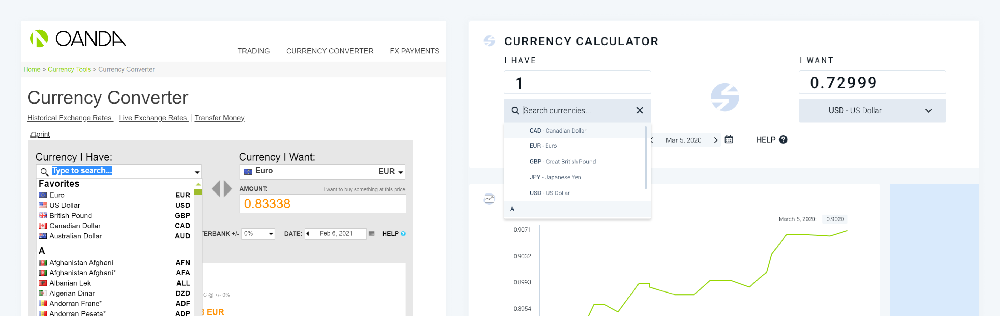
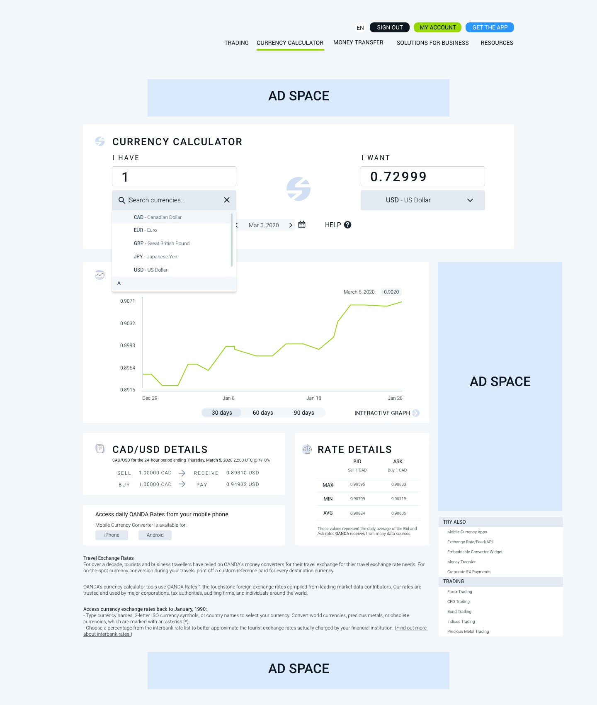
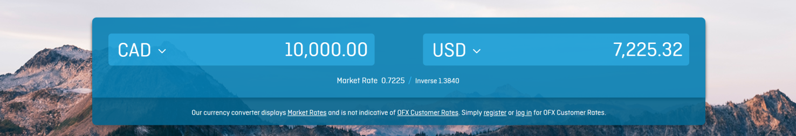
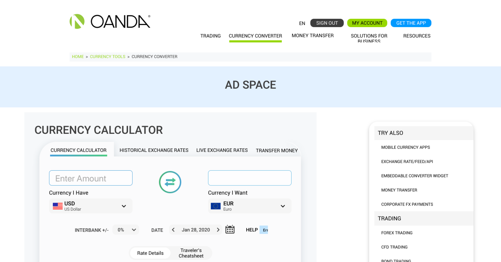
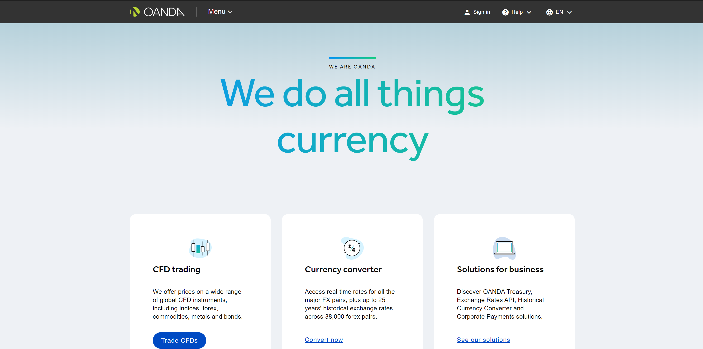
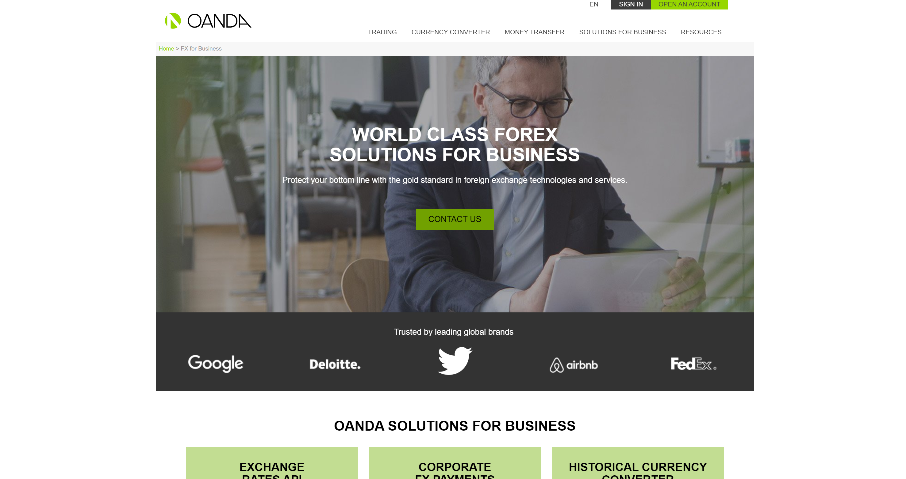
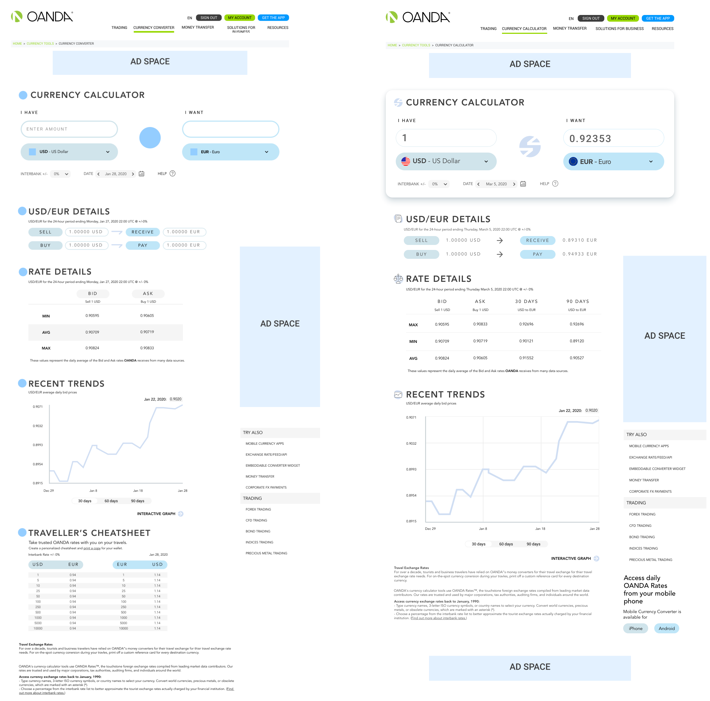
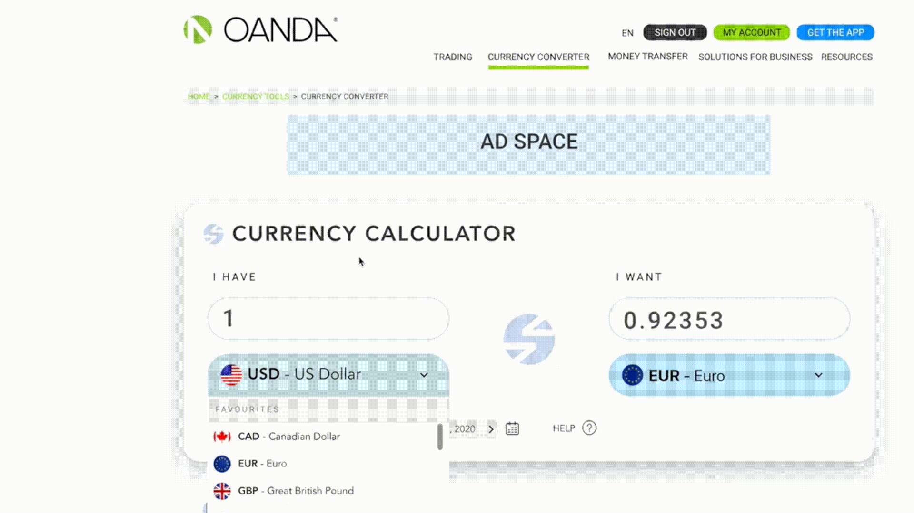
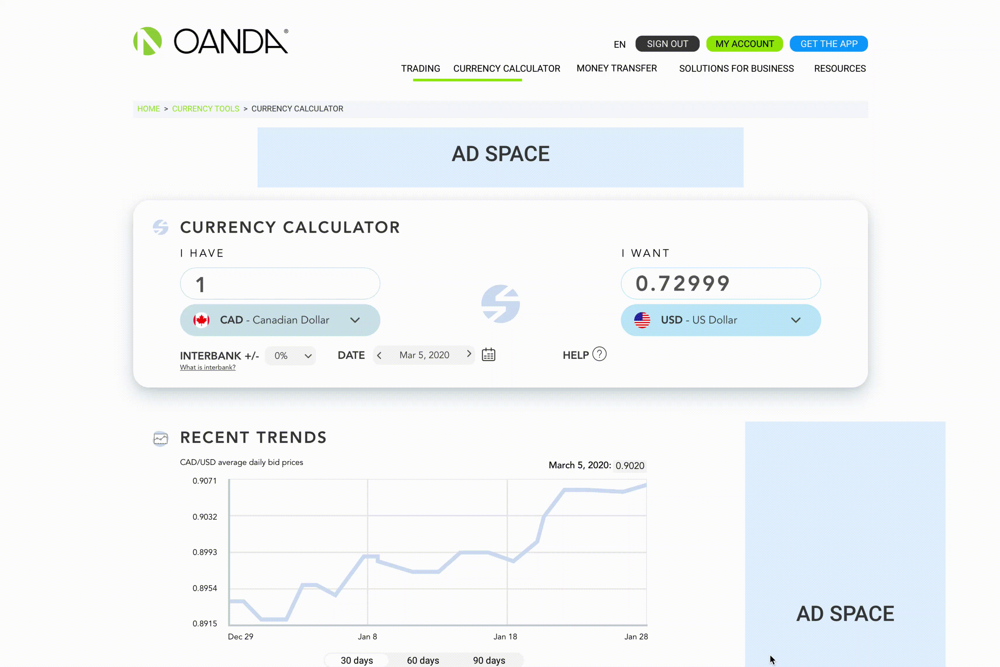

OANDA's Currency Calculator
my role
User Research
Visual Design
Interaction Design
Prototyping
User Testing
Visual Design
Interaction Design
Prototyping
User Testing
team
1 Designer (myself)
1 Product Manager
1 Product Manager
tools
FramerX
Invision
Invision
duration
Jan - Apr 2020
Context
OANDA is a global financial tech company leading in currency data, offering forex
trading, corporate fx payments, and exchange rates services.
OANDA's currency calculator is their most widely consumed tool, used by major corporations, tax authorities, auditing firms and individuals around the world.
OANDA's currency calculator is their most widely consumed tool, used by major corporations, tax authorities, auditing firms and individuals around the world.
Problem

Overview
Constraints + Things to Consider
Development Constraints: OANDA's developers were swamped as the company was
completely switching over tech stacks. This project was in efforts to tidy up and alleviate
tech debt not to add more cost.
I had to continuously evaluate the trade off between creating solutions that would be easiest to implement and meeting the users' goals.
I had to continuously evaluate the trade off between creating solutions that would be easiest to implement and meeting the users' goals.
Solution
A redesign that aligns with OANDA's product voice, while removing tech debt and
streamlining the user's experience.

Research
Competitive Analysis
To gain a better understanding of the tone and architecture of a standard currency
conversion page, I explored the currency conversion websites of RBC, XE, and OFX.

Noticeable Trends
User Research
Satisfying the needs of hundreds of thousands of people is quite the challenge. I
conducted user interviews with 10 individuals on varying demographics to understand their
motivations and frustrations.
Motivations
Key Insights
Information was hidden
Users struggled to find what they were looking for. For example, they wanted to calculate
conversions based on interbank rates. Our calculator offers this functionality, however,
it was hidden and hard to find.
Information Overload
Upon clicking on the page, users were overwhelmed with the amount of data. They didn't know
where to start, what's important, or what they should be focusing on.
Inconsistency
Users who use OANDA's trading platform were confused as to how different this tool looked
compared to other OANDA services. The functionality of the product was not matching their
mental models.
Exploring
Early Stages


Pivoting
My task at hand was to redesign; to change. Change is good, but how much is too much? It’s
no surprise that a completely new interface can result in "shocking" the user into a
confused or even frustrated state.
As you can see in my first iteration, I was hesitant to stray far from the original design. Once I took a step back and looked at my first iteration, I still thought it was outdated, visually unappealing, and barely addressed the initial flaws of the current interface.
With that being said, I pivoted. User shock was still a concern of mine, but in my eyes, an overhaul was deemed appropriate, and through user testing I ensured that usability and learnability was always a priority.
As you can see in my first iteration, I was hesitant to stray far from the original design. Once I took a step back and looked at my first iteration, I still thought it was outdated, visually unappealing, and barely addressed the initial flaws of the current interface.
With that being said, I pivoted. User shock was still a concern of mine, but in my eyes, an overhaul was deemed appropriate, and through user testing I ensured that usability and learnability was always a priority.
Brand Identity
It became clear to me that inconsistency did not lie solely in the Currency Calculator but
in all of OANDA’s products. It seemed as though depicting OANDA’s brand was a challenge in
of itself. Here are three completely different screens that are all tied to OANDA’s
products.



All three of these pages can lead users to the currency calculator page. I needed a better
understanding of what I should refer to as the driving force of my redesign.
I deicided to align myself closest with OANDA's portal, as it's the hub of all of OANDA's products and services.
I deicided to align myself closest with OANDA's portal, as it's the hub of all of OANDA's products and services.
Rationale: Research suggested that most users land on the currency
calculator page from OANDA's portal, thus, it seemed most appropriate to create a consistent
experience with the portal page.
Refining

Prototyping

Validating Design Choices
When designing solo, it's crucial to question, “Are these decisions justified?”
Any Feedback is good feedback
I asked colleagues walking past my desk to take quick glances at my design. I didn’t have
the time or resources to conduct numerous formal usability tests, but
any testing — no matter how informal — brought forth insights before I was too invested in my
designs.
Usability Testing
I conducted my tests through UserTesting.com, a platform that allows you to test remotely. I
set up an AB test with 8 users, creating two identical flows: one with my new prototype and
the other with the current design.
Synthesising Data
It was time to synthesis and develop insights. For me, that meant whipping out a pad of
sticky notes, a sharpie, and some whiteboard markers.


Contradicting Feedback
I found a persistent theme in my data:
navigation.
However, the specific points regarding the navigation were conflicting.
Some users preferred the compactness of the original design and how it required less scrolling to view. They liked how when they landed on the page, they can see almost everything that it had to offer.
On the other hand, some users struggled to find what they were looking for on the original design due to the small font size and condensed layout. These users liked the bigger text and white space that the new design provided.
However, the specific points regarding the navigation were conflicting.
Some users preferred the compactness of the original design and how it required less scrolling to view. They liked how when they landed on the page, they can see almost everything that it had to offer.
On the other hand, some users struggled to find what they were looking for on the original design due to the small font size and condensed layout. These users liked the bigger text and white space that the new design provided.
How might I use the same amount of
space as the original design but with larger design elements and whitespace?

What Changed
A Consistent Experience
Alongside this project, I was working on OANDA’s Design System. Looking back at one of my
initial challenges, “What is OANDA’s Brand?”, it seemed as though the design system cleared that
question right up. I made changes to ensure that the Currency Calculator adhered to our new
design guidelines.
Final Product
Reflection
Unfortunately, as my internship came to an end, I was unable to contribute to the development
process of this product page. Although I am not able to measure the
performance metrics of the redesign, there are many other means of evaluating my final product.
Seeing the Design System in Action
The Currency Calculator was one of the first products that implemented the Design System’s
components and guidelines seamlessly. In turn, developers can now efficiently build this new
interface by reusing code from preexisting components.
Self Awareness
I faced a lot of challenges during this redesign, ones I’m sure that most designers have
experienced
as well — especially when serving the role as the sole designer of a project.
This project made me learn a lot about myself — who I am, how I work, and how I face adversity. I’m a people person, and during this process, it was important for me to have others that I can bounce ideas off of; to both assure and challenge me. Although I loved the autonomy, it was the moments where I asked questions, received feedback, and presented my work to stakeholders that made me feel most creative and inspired.
This project made me learn a lot about myself — who I am, how I work, and how I face adversity. I’m a people person, and during this process, it was important for me to have others that I can bounce ideas off of; to both assure and challenge me. Although I loved the autonomy, it was the moments where I asked questions, received feedback, and presented my work to stakeholders that made me feel most creative and inspired.